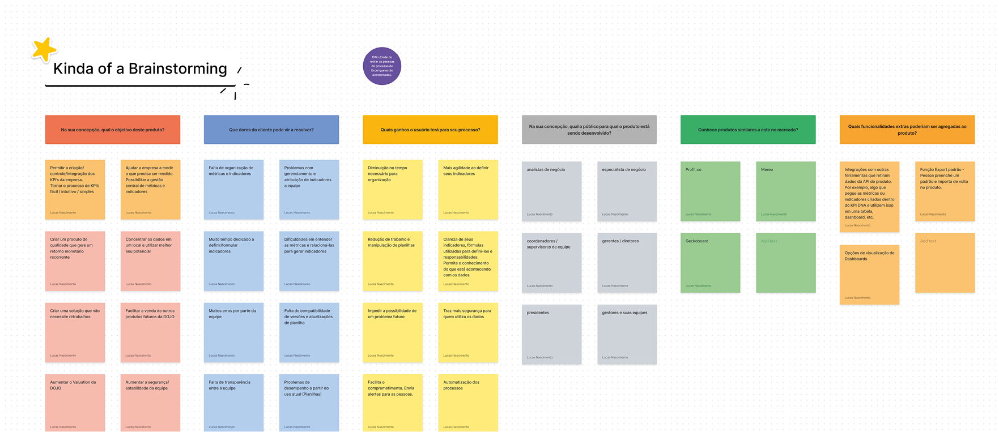
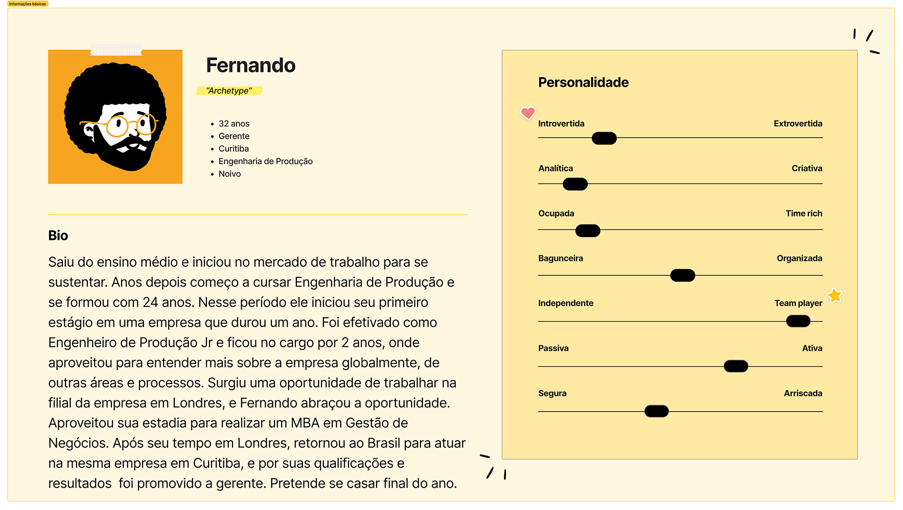
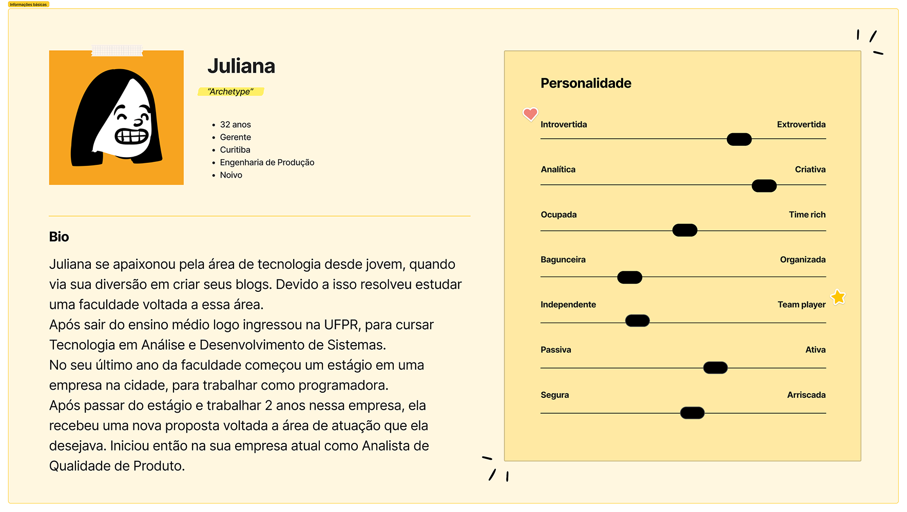
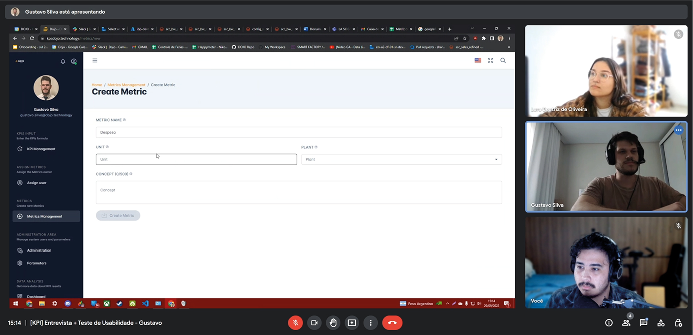
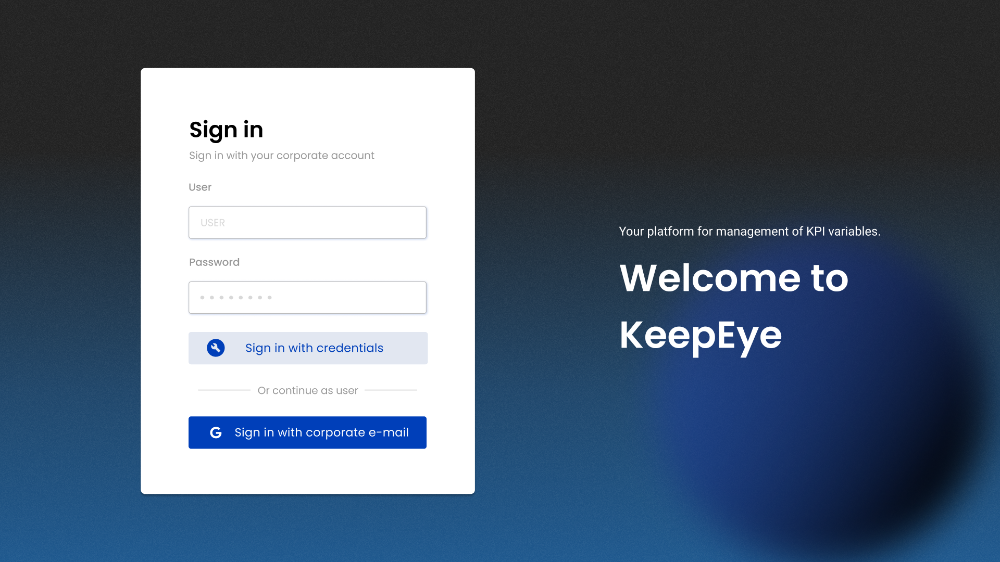
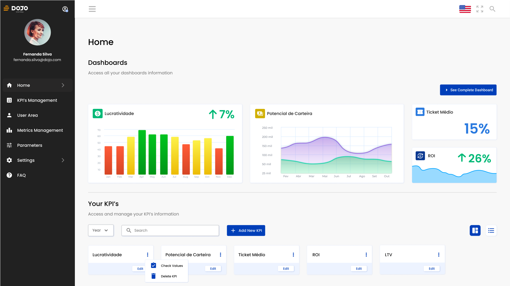
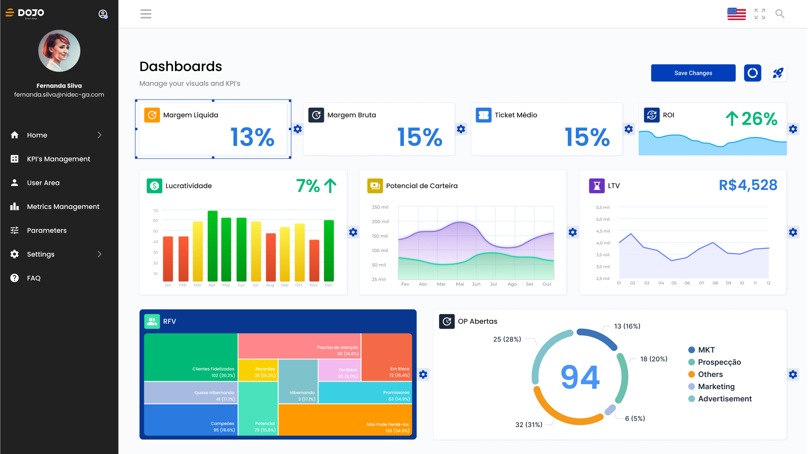
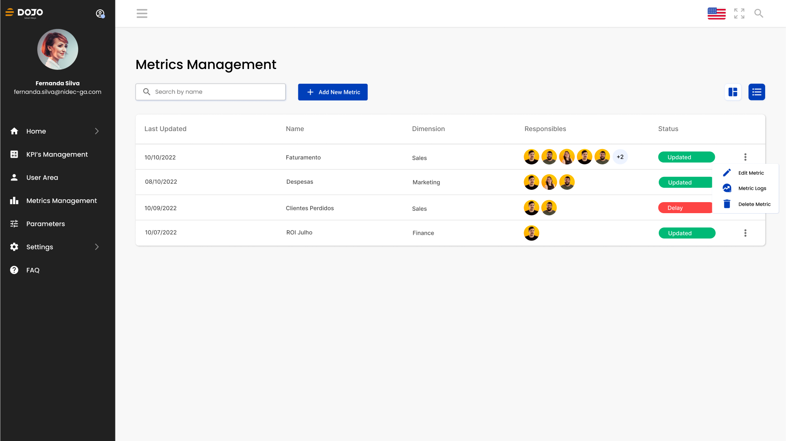
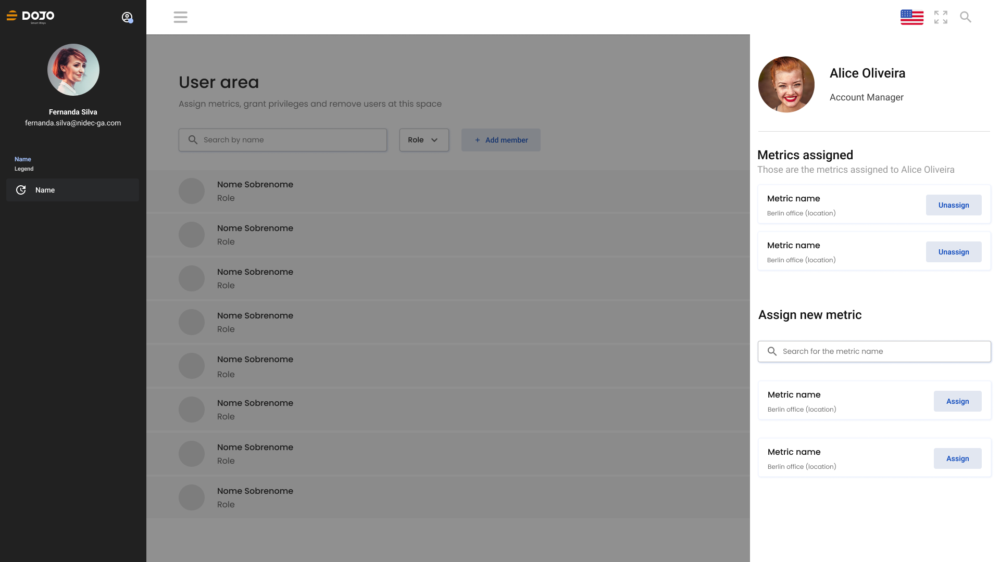

Case Study
Dojo lived from project to project and wanted a product of its own. I led the research, designed the platform, wrote part of the Angular front-end, and mentored a developer moving into design. Usability tests of the finished tool scored it 8.2 out of 10.
Background
The Business Case
Dojo Smart Ways ran entirely on project work: revenue stopped whenever a project did. The goal set for Keepeye was explicit: create the company's first product and shift its focus from data projects to products.
It had a candidate: an internal metrics tool Dojo had already built for a client project, and that users kept responding well to. Keepeye was the bet to turn that tool into a SaaS.
The User Problem
The companies we spoke to had no single place to look at their KPIs. Excel files, Google Sheets, and scattered Power BI dashboards, each maintained by a different team, each calculating the same metric its own way.
When leadership asked for a number, the answer depended on who they asked. People spent meetings reconciling reports instead of acting on them.
Everyone had the data. Nobody trusted their version of it.
The goals
01
Build a solution that could attract new clients and shift Dojo's focus from data projects to products, opening a recurring revenue line beside project work.
02
Replace manual data entry with a robust, easy-to-use platform: safer inputs, automated metrics, and a better day for the people who maintain them.
The process
01
Discover
Brainstorming with directors
Proto-personas
Market benchmarking
Survey with 40+ professionals
Interviews + usability tests
02
Define
User journey
Word cloud
UX Canvas
RICE prioritization
03
Develop
Blue Squid design system
Wireframes
Low to high fidelity
Visual identity
Angular + Tailwind build
04
Deliver
MVP launch
Usability tests
Metrics monitoring
Feedback + roadmap
01 · Discover
The existing tool was a starting point, not an answer. Discovery opened with brainstorming sessions involving the dev team and Dojo's directors, connecting business expectations to the pains the product had to solve. The board captured objectives, client complaints, and the features people expected before a single screen existed.

↑ The brainstorming board with the dev team and Dojo's directors: objectives, pains, and expectations
With the product values discerned, proto-personas captured who we were designing for: production engineers turned managers, analysts living inside spreadsheets. They kept the expected user base concrete for the whole team through every later decision.


↑ Proto-personas built from the discovery sessions
Product values defined in the brainstorms
aggregate
value, purpose, and practicality
connect
people, data, and goals
simplify
the everyday work around metrics
Interviews give depth but can mislead, so we surveyed more than 40 professionals who use metrics tools day to day, asking about their management methods, current platforms, and where those platforms failed them. Then we ran interviews and usability sessions on the existing tool, watching real users hit the exact walls the survey described.

↑ Interview and usability session on the existing KPI tool, run remotely with real users
Discover · What we learned
One metric, many versions
The most consistent finding: the same KPI produced different numbers depending on which system or export it came from. Not because formulas differed, but because the underlying data was never the same to begin with. The inconsistency was structural.
Built for analysts, not managers
Most KPI tools needed technical configuration or an analyst to produce a usable dashboard, so the managers who needed the numbers depended on someone else for the view. The opening was a tool a manager could own without SQL or a BI specialist.
Bad data leads to paralysis, not bad decisions
When professionals don't trust a number, they don't act on it, they investigate it. Meetings become reconciliation sessions and decisions wait. This reframed what we were building: not a prettier dashboard, but a single source of truth. The formula calculator came directly from this finding.
02 · Define
During the usability tests we mapped every step and interaction users had with the tool, start to finish. The journey showed not just where people struggled, but where the product lost them entirely.
The quantitative responses were distilled into a word cloud that surfaced the most repeated pains and needs. It kept the loudest problems in front of the team instead of buried in a spreadsheet.
With the problems understood, I consolidated them into a UX Canvas: one document stating what the product's experience had to deliver. Every later decision was checked against it.
With solutions drafted and development effort estimated, the RICE matrix ranked priorities analytically instead of intuitively. With four people and a fixed window, this decided what the MVP would and would not be.
03 · Develop
Development started with Blue Squid, a design system created to standardize components and carry a visual identity that Dojo's future products could inherit. With the system and the information architecture defined, I wireframed every screen of the product.
Screens moved from low to medium to high fidelity, validated at each step. The brand rested on three pillars: security, robustness, and simplicity. I built the components and screens in TypeScript, Angular, and Tailwind, and we shipped the MVP for real-world use.

↑ Wireframes covering every screen, drawn on top of Blue Squid and the information architecture

↑ Blue Squid components, later implemented in TypeScript, Angular, and Tailwind
03 · Develop · Visual identity
The logo construction started from concept pillars defined for the brand: security and robustness in how the product presents itself, aligned with the simplicity the tool offers the user. The identity runs through every screen, starting at login.

↑ The login screen carrying the new identity
The solution
The RICE exercise shaped the feature set directly. What scored highest was not always what we expected, but the research consistently pointed toward the same needs: centralization, formula consistency, and managerial autonomy.
Monitoring
KPI Dashboards
All active KPIs in one view: status, trend, goal. The first screen answers "how are we doing?" without a single click. Drill-down exists, but the summary stands on its own.
Data Trust
Metric Formula Calculator
The highest-scoring feature in the RICE exercise, and the one that attacked the trust deficit directly. Each metric connects to a centralized data source with a single formula, so every department reads the same number. No diverging exports, no parallel spreadsheets.
Configuration
KPI and Metrics Management
Create, edit, categorize, and link KPIs to the metrics that feed them. Research showed teams track 15 to 40 active KPIs, each with different owners, cadences, and sources. The management view had to absorb that complexity without becoming a spreadsheet itself.
Governance
User Area and Access Control
Some users configure, some monitor, some only read. Roles, permissions, and data scope decide who sees floor metrics and who sees consolidated results. Role definition came early and shaped the information hierarchy of the entire product.


↑ High-fidelity screens of the shipped product: dashboards, metric management, and user area




↑ Core screens of the MVP: home with KPI options, dashboards, metric management, and the user area
The role
UX Engineering
After handoff I joined the build as a front-end developer, writing the design system components and screens in TypeScript, Angular, and Tailwind alongside the team. Designing and implementing the same product removes the translation layer: when a component didn't survive contact with real data, I adjusted the design at the source.
It also meant I understood constraints before they became blockers. When the team hit a component complexity problem, I was already in the room.
Mentoring in Transition
One developer on the team was moving from front-end into UI/UX design. I reviewed her work throughout the project, walked through the reasoning behind decisions, and gave structured feedback on her interface choices.
Explaining why a pattern works forces you to articulate principles you normally apply on instinct. It sharpened my own thinking as much as hers.
04 · Deliver
Delivery didn't end at launch. We kept collecting: usability tests on the finished tool, key-metric monitoring, and a backlog of integration ideas straight from user feedback.
Takeaway
Keepeye compressed the whole cycle into one project: research, prioritization, design, code, mentoring. It confirmed a rule I still work by: whatever you skip in discovery, you pay for in delivery.
More work

Multipedidos
Senior Product Designer at a food platform serving 4M+ orders a month. Design system, consumer product, and AI-assisted workflows.

IncludED
Co-founder and Lead Product Designer at PixelPunk. Built a SaaS platform for inclusive education from zero to first paying customers.

Electrolux
Dashboard visual identity and design system for global markets, via Dojo Smart Ways.